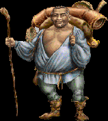

|

|
Izzio carries his massive sack and bulging belly with surprising ease and grace. A beatific grin and blissful eyes speak to Izzio's simple joy with nature. Unfortunately Izzio's Zen-like communion with the natural does not temper his obsessive pursuit of profit.
|
Sells/Teaches
|
Buys
|
|
He will buy any of your items as long as he doesn't already have duplicates.
|
Random Goods
|
|
Info & Tips
|
- Wandering Locations:
- Shal'ille Temple
- Outside Marion in West Merchant Way through Ilerian Woods
- Outside Barloque at Main Gates to Barloque
- Behind Cor Noth in the King's Way
- Outside Jasper in Lake of Jala's Song
- Favor/Quest/Courier: ??
|
|